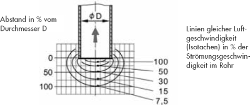
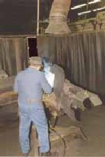
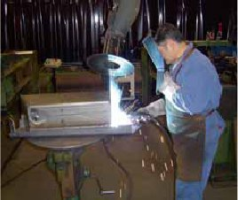
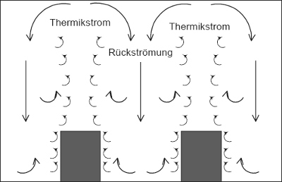
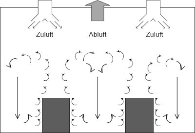
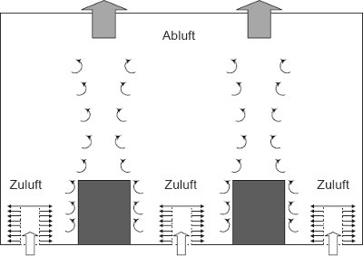

Lassen sich Luftverunreinigungen nicht vermeiden, ist eine Erfassung direkt an der Entstehungs- oder Austrittsstelle erforderlich.
Vielfach besteht die Auffassung, dass eine Erfassungseinrichtung z. B. in Form eines flexiblen Rohres, das sich über dem Arbeitsplatz befindet, ausreicht, um die entstehenden Luftverunreinigungen sicher zu erfassen. Die physikalischen Gegebenheiten zeigen jedoch, dass häufig nur geringe Anteile der Luftverunreinigungen erfasst und damit aus dem Arbeitsbereich der Beschäftigten entfernt werden.

Abbildung 3: Erfassungseinrichtung
Die Abbildung 3 macht deutlich, dass mit zunehmendem Abstand von der Erfassungseinrichtung die Luftgeschwindigkeit und damit das Erfassungsvermögen stark abnimmt. Bereits im Abstand eines Rohrdurchmessers beträgt die Luftgeschwindigkeit nur noch 7,5 % der Luftgeschwindigkeit im Rohr.
Dadurch ist klar, dass die Erfassungseinrichtung möglichst nahe an die Entstehungsstelle (Emissionsquelle) herangeführt werden muss.
Durch die Anbringung eines Flansches an das Rohr ergibt sich ein erheblich höheres Erfassungsvermögen.
Bei ortsveränderlichen Emissionsquellen, z. B. langen Schweißnähten, muss die Erfassungseinrichtung nachgeführt werden. Die betrieblichen Erfahrungen zeigen, dass Beschäftigte dies als besonders lästig empfinden und es dem kontinuierlichen Fortgang der Arbeit, gegebenenfalls auch der Qualität, entgegensteht.
Eine weitere Störgröße können Querluftströmungen sein, die in jedem Raum vorhanden sind. Bereits geringe Querströmungen (0,1 bis 0,2 m/s) beeinträchtigen die Erfassung.
 |
 |
|
Abbildung 4: So nicht! |
Abbildung 5: Aber so! |
Lassen sich Luftverunreinigungen nicht ausreichend an der Entstehungsstelle erfassen, z. B. bei ortsveränderlichen Emissionsquellen, muss der Arbeitsbereich zusätzlich zur Absaugung ausreichend gelüftet werden (Raumlüftung). Bei der Raumlüftung ist eine wirksame Luftführung die wichtigste Voraussetzung. Zuluft und Abluft müssen so geführt werden, dass Luftverunreinigungen nicht in den Atembereich der Beschäftigten gelangen.
Ohne Lüftung steigt in einer geschlossenen Halle durch die vorhandene Wärme die Luft nach oben, kühlt dabei ab und fällt an den Wänden wieder nach unten. Es bilden sich Luftwalzen aus. Dies ist ein ständiger Luftkreislauf, der in Abbildung 6 zu erkennen ist.

Abbildung 6: Luftkreislauf ohne Lüftungsmaßnahmen
Durch hohe Zuluftgeschwindigkeiten im Deckenbereich der Halle werden die Thermikströme gestört. Die Raumluft mit den Verunreinigungen bewegt sich unkontrolliert in der Halle und somit auch im Atembereich der dort Beschäftigten.

Abbildung 7: Störung der Thermikströme durch die Zuluft von oben
Wird die Zuluft im unteren Hallenbereich impulsarm zugeführt, unterstützt sie die Thermikströme nach oben. Dort kann die verunreinigte Luft erfasst und fortgeleitet werden. Ein Beispiel dafür ist die Schichtenströmung.

Abbildung 8: Optimale Luftführung durch Schichtenströmung
Bei richtiger Auslegung der Zuluft entsteht eine schadstoffarme Schicht im Arbeitsbereich. Berechnungen hierzu sind von Fachleuten der Lüftungstechnik durchzuführen.
Auch Ihre Berufsgenossenschaft berät Sie bei Fragen zur Arbeitsplatzlüftung.